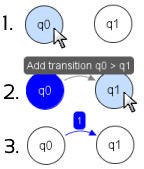

Add Transition-Tool
 To add transitions between two states, click first on the starting state.
Then move the mouse to the end state and click. You always see a preview
of the resulting transition. After second click a window will appear and you
can define the transition letters.
To add transitions between two states, click first on the starting state.
Then move the mouse to the end state and click. You always see a preview
of the resulting transition. After second click a window will appear and you
can define the transition letters.
